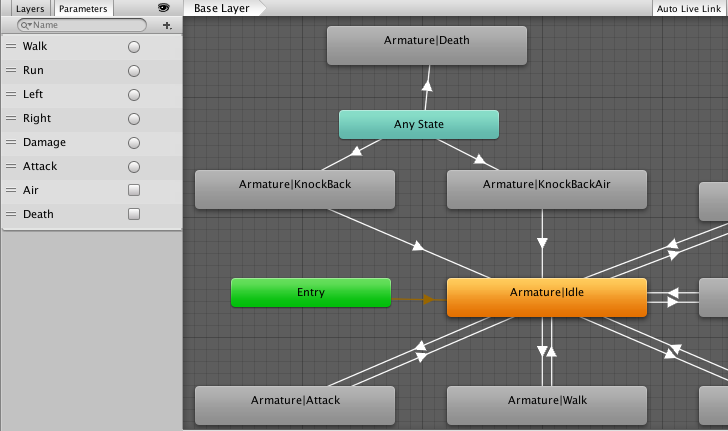
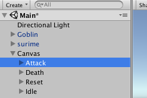

traPで制作されている『Clay Plate's Story』(2017春~)という3Dゲームで3Dモデルを動かすためのblenderからUnityへの移植の方法を書きました。
blenderからUnityへの移植
『Clay Plate's Story』の企画がたった当初、最初に私がモデリングからプログラム班にそれを渡すま
での流れを確立することとなり、キャラ作りの手引書？のようなものを書くこととなりました。
Unityのモデルのプログラム
BlenderからUnityへ
まずはBlenderから作ったモデルをfbx形式でエクスポートします。
次に、下記のdoTween.zipをダウンロードしてunityで開いてください。
doTween.zip ダウンロード
そして、すでにあるAssets/Model/surimeのファイルと同じく
Assets/Model/( 作るモデルの名前)のファイルを作ってそのファイルの下に先程のfbxファイルをインポートします
上の画像のようにfbxのファイルとその色のデータが入ったMaterialsのファイルの二つが入ります。
このfbxファイルの三角マークをクリックして中身を見ると、このモデルの部品一式と、アニメーションファイル（再生マークのやつ）が入っています。
これはアニメーションのここの材料です。
アニメーション関連は後で行うので今はこの中身が見えないように上の画像のようにしておいて下さい。
マテリアルの設定
次に、fbxファイルをクリック&ドラッグして上の作業スペースにおいて下さい。
ここでお気づきかもしれませんが、このファイルはテクスチャが貼られていませんこのテクスチャを外部から設定して行きましょう。
必要なテクスチャをfbxファイルと同じ階層にあるMaterialsに入れます。
新たにマテリアルを作って設定するか、すでにあるマテリアルをいじります。
透過部分があるならShader/Legacy Shaders/Transparent/Diffuse
ないならShader/Legacy Shaders/Diffuse
を使ってテクスチャを入れます。
アニメーションの下準備
ではできたファイルにアニメーションを仕込みます。
すでにこのモデルの中身にはAnimatorが入っています。ControllerがNoneになっています。

ここにAnimator Controllerをfbxファイルと同じ階層に作ってぶち込みます。
このAnimator Controllerをダブルクリックすると、Animatorが起動します。
ここに、先程みたfbxファイルの下にあるアニメーションの材料をぶち込みます。これにフラグ（アニメーション遷移の条件）をつけると以下の矢印ができます。（後でプログラムの説明と並行して言います）
プログラムとか
さて、ここまで準備ができたらプログラムを書きましょう。Assers/Model/surimeの下にあるsurimeMoveのスクリプトをコピーしてAssets/Model/( 作るモデルの名前)にペースト、わかりやすい名前書き換えて下さい。
このスクリプトを開くとまあごちゃごちゃ説明が書いてあるのでそれを読んでくれという感じですが、
```java:main.java
10 public GameObject obj;
```
これでモデルのインスペクター（下の画像）にobjと出るので、そこに自身のモデルをドラックして登録します。
```java:main.java
15 private const float animeFps = 24;
```
ここで、自身の作ったアニメーションのfps(1秒にどれくらいのコマ数があるアニメーションを作ったか)を登録して下さい。
```java:main.java
18 public AnimationCurve 名前;
```
これはでモデルのインスペクターにどれくらいの割合で動くかを設定できます。この緑の線が描かれているのをクリックすると、編集できます。
さて、ここからが本題です。
スライムのスクリプトを例に見て行きましょう。
```java:main.java
public void IdleMove()
{
nowmove = false;
mysequence.Kill (false);
}
```
のように一つ一つ動きを作って行きます。ちなみにこの関数は変えないで下さい。
とりあえず最初のAttack()の関数を説明しましょう。
```java:main.java
public void Attack(){
if (nowmove == true) {
return;
} else {
nowmove = true;
}
```
とりあえず最初にこの関数が呼ばれた時に他の作業が中断できるかどうかを確認し、もし大丈夫なら関数を開始します。
```java:main.java
mysequence.Kill (false);
```
次に現在設定されているmysequenceを破棄します（mysequenceは現在プログラムで動かしているオブジェクトの動き方です。この後にmysequenceの設定をするので、そこの説明でmysequenceは理解して下さい）
```java:main.java
Vector3 dir = myLocalVec();
float moveTime = 65 / animeFps;
```
これが初期設定ですdirに自身が現在動いている向きを取得して、moveTimeにこの関数を読んでいる時間を設定しますこの関数では65/animeFps(65/24秒)でした。これを設定するときは、Blenderで自分が何コマ使ったかを見た方がいいでしょう。
はい、mysequenceつまりは自分がする移動の仕方の設定です。
```java:main.java
mysequence = DOTween.Sequence ()
```
までは定例文として書いてしまいましょう。
この後に一つ目の動きを入れます
```java:main.java
.Append (
obj.transform.DOMoveZ (transform.position.z + 6 * dir.z, moveTime)
.SetEase (easingAttackHorizontal)
)
```
Appendでmysequenceに動きを追加することを明示して下さい。
（Appendとは現在している動作が終わったあとにその動作を行う、的な指示です）
このAppendの中にどこに動くか、どういうふうに動くかを書きます。
```java:main.java
.Append (
obj.transform.DOMoveZ (自身が向かう場所, 何秒かけていくか)
.SetEase (AnimationCurveの名前)
)
```
AnimationCurveとは、先ほど行った緑の線のやつです
さて、ここに別の動きを加えます。
```java:main.java
.Join (
obj.transform.DOMoveX (transform.position.x + 6 * dir.x, moveTime)
.SetEase (easingAttackHorizontal)
)
```
Joinは、現在行う動作と同時に行うという意味です。現在、X座標系に出されている指示はないのでAppendでも構いません。
中身はまあ同じなので割愛っと
```java:main.java
.OnStart (() => {
animator.SetTrigger ("Attack");
})
.OnKill (() => {
nowmove = false;
})
```
はい、OnStart、OnKillはみたまんま、その動作をする瞬間にすること/終わった瞬間または破棄されたにすることをかきます。
animator.SetTriggerはアニメーション遷移のフラグ立てです。
とりあえずこのAttack()の関数が説明し終わったらこの説明をします。
```java:main.java
.Join (
obj.transform.DOMoveY (transform.position.y + 2, 15/animeFps)
.SetEase (easingAttackVertical)
.SetDelay (20 / animeFps)
.SetLoops(2,LoopType.Yoyo)
);
}
```
はい、新たにSetDelay/SetLoopsが出てきました。SetDelayは時間差で動かしたいとき、SetLoopsは動きをループさせたい時に書きます。
ループに関しては種類があるので、ネットで調べた方がよほどわかりやすいので、まぁ、察して下さい。
アニメーション遷移
アニメーション遷移の仕方を説明します。

要するにこの矢印の作り方、というわけです。
さて先ほど作ったAnimator Controllerを開くと左にParametersというのがあります。ここにフラグに使う要素を入れて行きます。一度に全部作ると混乱するので一つ一つ作りましょう。
Parametersの『＋』をクリックすると四つのフラグ要素が出てきます
Floatは走る速度などの数値
Intも数値（ただし整数
BoolはTrue/Falseの真偽をみる
TriggerはBoolと同じだが、一回そのフラグが使われると自動的にFalseになる。
さてこれらでフラグを使った後は、それぞれのアニメーションの要素を右クリックしてMake Transitionで遷移先のアニメーションに繋ぎます。
『Entry』と『Any State』がすでにありますが、『Entry』は最初にそのモデルが生成された時に自動で再生する先のアニメーションを指定しています。
『Any State』は特定のフラグ、例えば死亡したというフラグがたった時に他の何よりも優先して遷移させる時に使います。
全てのアニメーションの要素から矢印がすでに繋がっている、と考えればわかりやすい？でしょう。
次にこの矢印が使われる条件をConditionsで追加しますBool/Triggerは特に何もありませんが、他二つはとある数値より大きいか小さいかを問われるので設定しましょう。
そのアニメーションが終わった瞬間にフラグ無しで自動的に次のアニメーションに行きたいときはHas Exit Timeにチェックを入れましょう。
実験
はい、ではこのモデルを実際に動かしてみましょう。
関数が本当にあっているか試したいですよね？
作成したモデルにBox Collider（当たり判定のやつ）とRigidbody（重力とかなんとか）をまず入れます。
すでに作業スペースに出ているCanvas以下のボタンを使いましょう。
とりあえずCanvas/AttackのInspecter常にあるOn Click()にかけたスクリプトをドラックしてその中の関数（画像ではsurimeMoveのAttack()という関数）を設定し、ボタンを押せばその関数が呼ばれるようにします。

これで、実際動かして見るとその関数があっているかどうかがわかります。
ぷ班に渡す
最後に、できたモデルをAssets/Model/( 作るモデルの名前)にワークスペースからドラックさせます。
そしてAssets/Model/( 作るモデルの名前)をUnityパッケージとしてエクスポートしてぷ班に渡せば仕事は終わりです。